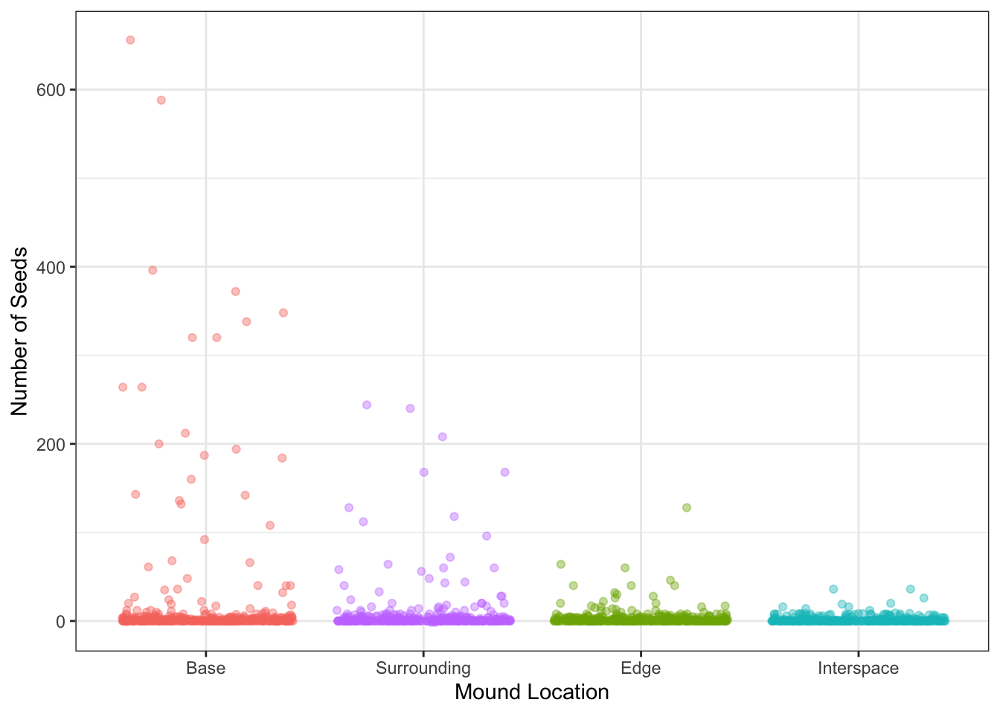

Code
knitr::opts_chunk$set(echo = TRUE, message = FALSE, warning = FALSE)Problem #1: How does total seed number differ between kangaroo rat mound locations?
Summary of context article (The Composition of seed banks) Rat mound creates micro-environments that can effect seed banks or number of seeds, studies tend to show that there are more seeds around mounds
Data Dictionary:
mnd: kangaroo rat mound (location)
dir: direction from center of the mound
loc: microhabitat (B = base, S = surrounding, E = edge, I = interspace)
species: four letter code for target taxa
seeds: seed counts for species and percent cover for physical variables
Problem #2: How does seed count vary with plot type (shrub or open), plant species, and total number of inflorescences? Is there a simpler model that explains seed count, and if so, what is it?
Summary: Because of climate change “shrubfication is happening in the tundra, where more shrubs are growing in the tundra, which would effect the ecosystem there. On average, there are more flowers in open plots vs shrub plots. Shrub plots are plots that have undergone shrubfication. Open plots have not experienced shrubfication yet.
Data Table/Dictionary
pollinator: observations of pollinators visiting plots
shrub_num: shrub ID
treatment: open or shrub plot
pollinator_ID: what type of pollinator
cloud_cover: “rough % cloud cover” - whatever that means
wind: wind speed (mph) - probably because it affects pollinators
seed_ctwt
species_ID: what plant
plant_nr: plant number, what number 1-5 plant was assigned to
total_nr_infl: total number of inflorescenses
nr_infl_coll: number of inforesecenses collected
nr_seeds: seed numbers
wt_seeds_mg: seed weights
individual_flower
community_flower
Siting data:
problem one data: (T. Koontz and Simpson 2013)
problem one context: (T. L. Koontz and Simpson 2010)
problem two data: (Seaver 2022)
Kangaroo rats build mounds that create micro-environments and foster more plant diversity than adjacent grassland (Guo 1996). Even within the same mound, there are different microhabitats depending on distance away from the mound (T. L. Koontz and Simpson 2010). Using data from “Effects of Kangaroo Rat Mounds,” our study investigates how total seed number differs between kangaroo rat mound locations (base of the mound, surrounding areas, edge of mound, and interspace between mound and grassland) (T. Koontz and Simpson 2013). Our null hypothesis states that there is no difference in number of seeds between the different kangaroo rat mound locations. Our alternative hypothesis states that some locations of the mound support more seeds than others.
knitr::opts_chunk$set(echo = TRUE, message = FALSE, warning = FALSE)library(here)
library(naniar)
library(tidyverse)
library(GGally)
library(tidyr)
library(corrplot)
library(skimr)
library(stringr)
library(effsize)
library(rstatix)#Load in Problem 1 data
kangaroo_rat <- here("data", "sev208_kratseedbank_20120213.txt") |> #File path
read.csv(header= TRUE, sep =",", quote = "") |> #Has header, delimiter is comma, no quoting
mutate(loc = str_replace_all(loc, c("B" = "Base", #Replace code names with actual names
"D" = "Surrounding",
"E" = "Edge",
"I" = "Interspace")))
#Load in Problem 2 data
pollinator <- here("data", "shrubstudy_pollinator.ms.data.csv") |>
read.csv()
seed_ctwt <- here("data", "shrubstudy_seed_ctwt.ms.data.csv") |>
read.csv()
individual_flower <- here("data", "shrubstudy_individual_flower_counts.ms.data.csv") |>
read.csv()
community_flower <- here("data", "shrubstudy_community_flower_counts.ms.data.csv") |>
read.csv()#Missing data check
gg_miss_var(kangaroo_rat) #No data missing
Figure ?? Visualization of Missing Data in “kangaroo_rat” dataframe
The y-axis are the variables (columns in the dataframe and the x-axis marks how many rows have missing data per variable.
#Exploratory data visualization, looks like locations closet to mound have most seeds, but we should further explore
ggplot() +
geom_jitter(data = kangaroo_rat, aes(x = loc, y = seeds, color = loc), alpha = 0.4) + #Create jitter plot of seed count observations
theme_bw() + #Set theme
theme(legend.position = "none") + #Omit legend
labs(x = "Mound Location", #Label axes
y = "Number of Seeds") +
scale_x_discrete(limits = c("Base", "Surrounding", "Edge", "Interspace")) #Reorder locations from closet to furthest
Figure ???. Exploratory Data Visualization of Seeds vs Mound Location
This figure plots observations of the number of seeds found at each mound location. The locations are in order from closet to furthest from the mound, from the base of the mound to the interspace adjacent to the grassland.
#Create model to further explore relationship
modelobject <- lm(seeds ~ loc, data = kangaroo_rat)
#Visualize models - diagnostic plots in a grid
par(mfrow = c(2, 2))
plot(modelobject) #Data is not normal 
Figure ???. Exploratory Data Visualization of Seeds vs Mound Location
[insert caption here]
kruskal_results <- kruskal.test(seeds ~ loc, data = kangaroo_rat) #p-value very small, evidence to reject the null, evidence that there is a difference in seed numbers among the mound locations
kruskal_results
Kruskal-Wallis rank sum test
data: seeds by loc
Kruskal-Wallis chi-squared = 21.932, df = 3, p-value = 6.738e-05#Post-hoc tests to see how and which ranks differ
rstatix::kruskal_effsize(seeds ~ loc, data = kangaroo_rat, conf.level = 0.95)# A tibble: 1 × 5
.y. n effsize method magnitude
* <chr> <int> <dbl> <chr> <ord>
1 seeds 1560 0.0122 eta2[H] small #Magnitude is very small, so the difference between seed number at different locations is significant but smallgg_miss_var(pollinator) #Most of tag_num missinggg_miss_var(seed_ctwt) #Most of dist_fr_shr, wt_seeds_mg, nr_seeds missing
gg_miss_var(individual_flower) #dist_fr_shr missing, some flower count missinggg_miss_var(community_flower) #No missing data#Clean data
seed_ctwt_subset <- seed_ctwt |>
select(c("treatment", "species", "total_nr_infl", "nr_seeds")) |> #Plot type, plant species, total number of inflorescences - select relevant columns
drop_na(nr_seeds) #Thats a lot of data missing... should we do anything?
#Not quite sure what the total number of inflorescences vs inflorescence collected means#Delete this?
#Calculate Pearson's r for numerical values only
seed_cor <- seed_ctwt_subset |>
dplyr::select(total_nr_infl:nr_seeds) |> #Not sure if this is correct
cor(method = "pearson")
#Create correlation plot
corrplot(seed_cor,
method = "ellipse", #Change shape of item in cells
addCoef.col = "black") #Add coefficient in black textseed_ctwt_subset |>
dplyr::select(total_nr_infl:nr_seeds) |> #Not sure if this is correct either
ggpairs()
#Create a null and a full model - fit multiple linear models in order to see which one is best
null <- lm(nr_seeds ~ 1, data = seed_ctwt_subset)
#Assume no relationship between total mass and predictor variables
#1 indicates absence of all other predictors
full <- lm(nr_seeds ~ treatment + species + total_nr_infl, data = seed_ctwt_subset)
#Assume predictor variables can predict biomasspar(mfrow = c(2, 2))
plot(full) #DATA IS NOT NORMAL CANNOT DO MULTIPLE LINEAR REGRESSION library(tidyverse)
library(here)
library(janitor)
library(ggeffects)
library(performance)
library(naniar)
library(flextable)
library(car)
library(broom)
library(AICcmodavg)
library(GGally)
library(MuMIn)
#######
library(DHARMa)
library(MASS)
library(lme4)
library(glmmTMB)
#install.packages('TMB', type = 'source')skim(seed_ctwt_subset)| Name | seed_ctwt_subset |
| Number of rows | 182 |
| Number of columns | 4 |
| _______________________ | |
| Column type frequency: | |
| character | 2 |
| numeric | 2 |
| ________________________ | |
| Group variables | None |
Variable type: character
| skim_variable | n_missing | complete_rate | min | max | empty | n_unique | whitespace |
|---|---|---|---|---|---|---|---|
| treatment | 0 | 1 | 5 | 7 | 0 | 2 | 0 |
| species | 0 | 1 | 6 | 6 | 0 | 6 | 0 |
Variable type: numeric
| skim_variable | n_missing | complete_rate | mean | sd | p0 | p25 | p50 | p75 | p100 | hist |
|---|---|---|---|---|---|---|---|---|---|---|
| total_nr_infl | 0 | 1 | 7.15 | 12.56 | 1 | 1.00 | 2.5 | 7.00 | 117 | ▇▁▁▁▁ |
| nr_seeds | 0 | 1 | 14.55 | 28.62 | 0 | 1.25 | 5.0 | 13.75 | 285 | ▇▁▁▁▁ |
# linear model, we know this is wrong
seed_L1 <- lm(nr_seeds ~ treatment + species + total_nr_infl, data = seed_ctwt_subset)
# generalized linear model with Poisson distribution
seedctwt2 <-glm(nr_seeds ~ treatment + species + total_nr_infl, data = seed_ctwt_subset, family = "poisson")
seedctwt2.a <- glm(nr_seeds ~ treatment + species + total_nr_infl, data = seed_ctwt_subset, family = "poisson")
# generalized linear model with negative binomial distribution
seedctwt3 <- glm.nb(nr_seeds ~ treatment + species + total_nr_infl, data = seed_ctwt_subset)
seedctwt3.a <- glmmTMB(nr_seeds ~ treatment + species + total_nr_infl, data = seed_ctwt_subset, family = "nbinom2")
# generalized linear model with Poisson distribution and random effect of site
#seedctwt4 <- glmer(nr_seeds ~ treatment + species + total_nr_infl, data = seed_ctwt_subset, family = "poisson")
# need to go over this model, as in class it was site, but IDK how to do incorperate it into our dataframe
##from Class###
# generalized linear model with Poisson distribution and random effect of site
#salmod4 <- glmer(count ~ cover + mined + spp + (1|site), data = salamanders, family = "poisson")
#salmod4.a <- glmmTMB(count ~ cover + mined + spp + (1|site), data = salamanders, family = "poisson")# linear model vibe
plot(simulateResiduals(seed_L1, plot = TRUE))
# generalized linear model with Poisson distribution
plot(simulateResiduals(seedctwt2, plot = TRUE))
# generalized linear model with negative binomial distribution
plot(simulateResiduals(seedctwt3, plot = TRUE))

How does seed count vary with plot type (shrub or open), plant species, and total number of inflorescences? Is there a simpler model that explains seed count, and if so, what is it?